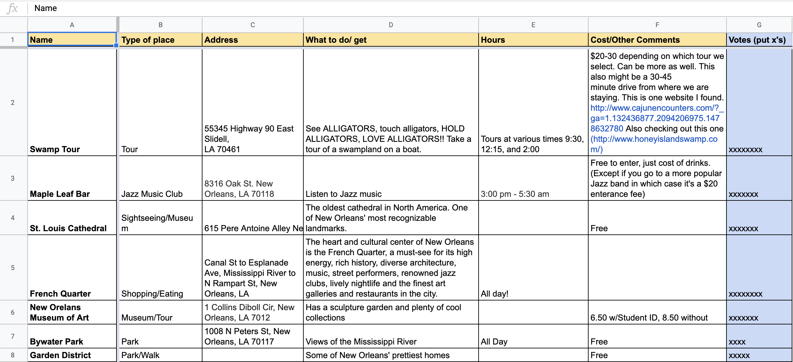
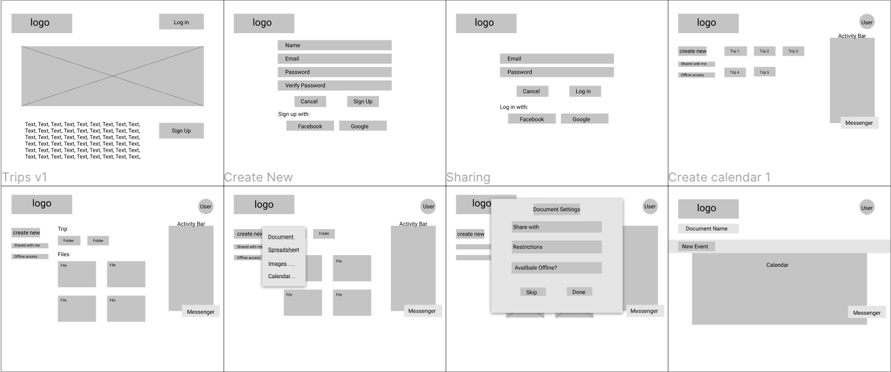
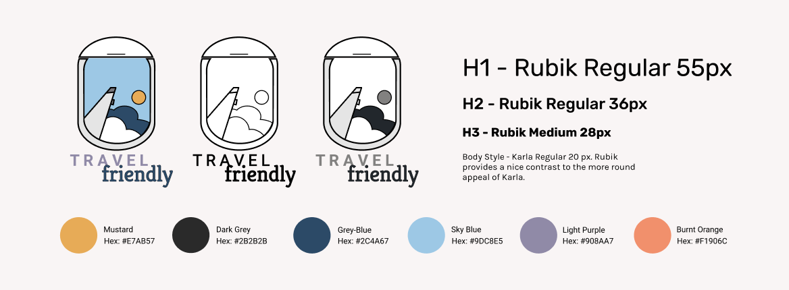
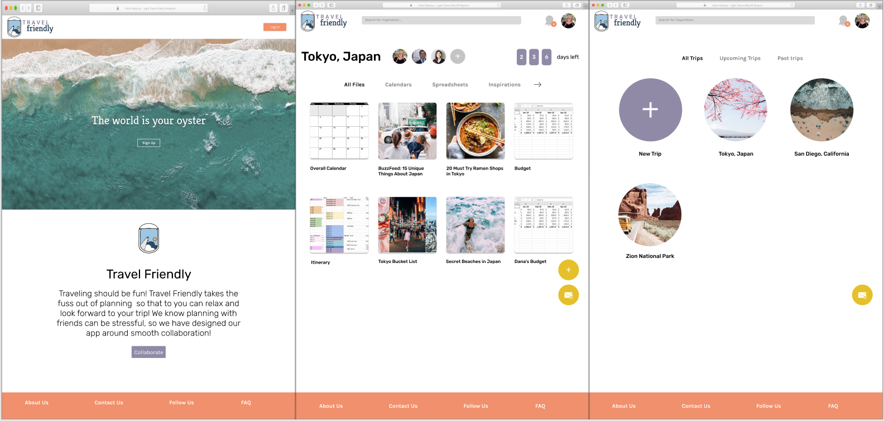
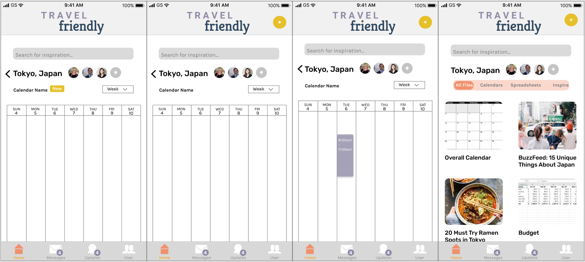

Case Study:
Travel Friendly
Summary
In an era,where data is stored on the cloud, there are endless opportunities for exploration. A client wanted to create a cloud storage application but was unsure what the product would do. Travel Friendly, is a cloud storing application for planning trips with others.
The Problem
Young adults travel at least once a year with their friends. They find it difficult to plan efficiently together due to a number of factors including, not being able to meet in person, difficulty including everyone’s perspective and differing levels of expertise on planning tools. This leads to frustration for the traveler when planning should be part of the vacation!
The Process
When presented with this problem, I remembered the many trips that I went on with my friends and the struggles we had in planning on Google Drive. My roommate specifically, loved planning trips and would make spreadsheet after spreadsheet for each trip. I ran with this idea of a cloud storage application that focused on collaborating with others.
Competitve Analysis
When presented with this problem, I remembered the many trips that I went on with my friends and the struggles we had in planning on Google Drive. My roommate specifically, loved planning trips and would make spreadsheet after spreadsheet for each trip. I ran with this idea of a cloud storage application that focused on collaborating with others.
Survey
I created a survey that I sent out to some college friends as well as current college students. Some notable questions I asked in the survey: How often do you travel for fun?
Do you usually plan out your trips?
What tools do you use to plan your trip?
What parts of planning with other people do you find difficult?
Through the survey I found that:
- 78% of people travel at least once a year
- 95.6% plan their trips to some extent
- 78.9% of planners use Google Drive
- Organization was the biggest reason
- 63.2% said planning with others is difficult because it is hard for everyone to give their input
User Stories
Keeping these two personas in mind, along with my survey and the competitive analysis, I wrote out the user stories for Travel Friendly. The high importance tasks are:
- As a returning user, I want to create content.
- As a returning user, I want to communicate with others in my group
- As a returning user, I want to create a calendar
- As a returning user, I want to organize my files
- As a returning user, I want to share my files
User Flow
Next up, I took these high priority tasks and made users flows for them. By doing this I was able to map out a general idea of what sort of functions my application should have and got me thinking about the potential layouts. In order to do these user flows, I studied these tasks on other cloud storage sites to see all of the steps play out.
Wireframes
I started my wireframes with a sketch of the all of the screens required to accomplish the tasks listed earlier. I knew that I wanted a site which was going to be easy to navigate for new users, so I looked towards Google Drive for a lot of inspiration. I took note of the tools and functions that were especially useful on Google Drive and in order to incorporate those into my design.
Usability Testing
I tested these wireframes with potential users for feedback on how I can improve upon the design. The biggest takeaway that I received was that it was a little too reminiscent of Google Drive.
One user in particular expressed that the way these files were organized reminded her of work which is not the vibe I would want a travel planning website to have. I kept this in mind as I moved forward to the next steps of design.
Branding
I had decided on naming my product Travel Friendly pretty early on as I believed it really encapsulated exactly what the application is about. I set about sketching out some logo options to kick start the branding process. I came up with five potential logos, but one of them really stood out to me. The airplane window has been the subject of many travel photos that I have seen from friends on social media. I think it represents traveling to the age group that I am targeting and so, I chose to use it to represent my brand.
Next up, I searched through the internet for photos and colors that I felt like went along with my brand. I wanted vibrant colors from sunsets and muted colors from forests.
I was able to pull together a number of diverse images that I felt could best show what Travel Friendly was all about. I placed these images on a mood board.
I created a style guide to map out the different logos variations and style elements that would go with Travel Friendly. I also have a list of fonts that will be used and the appropriate sizes for each font.
Mockups
I took all of the information I gathered from the usability tests along with my style guide and created a high fidelity mockup of Travel Friendly. I started out by going back to my original sketched and deviating a bit from the Google Drive layout. This led to a more simple homepage with less scattered files and folders. The landing page design was based off of popular design trends found in popular websites today. This included a large eye catching image with texts dispersed throughout the page. Since link saving was a function that survey takers expressed as something they would utilize in a planning website, I decided to add a search bar so that users may look up articles etc for their trip. Users can then save these links to their respective trip pages along with content that they create themselves.
The collaborators are clearly shown at the top with an option to add more. Right below is a list of folders that the user can name for better organization. The two circles on the bottom are fixtures on each page. The bottom one is a messenger that allows users to communicate with each other on any page so that the collaboration can flow seamlessly through each document.
This is different from Google Drive where users may communicate on separate documents. Creating a calendar, according to survey takers, is an essential part of travel planning. Users can create multiple calendars and tag them to organize them into various folders.
Preference Testing
I conducted preference testing in person for three elements. Test number one was choosing between circle images or square images for the travel folders. Circle won out over the squares and the feedback I received was that circles are more interesting to look at. The same result was found when I tested circle images against square images for the travel creation page.
The third test was between lines and boxes for the sign up page. The unanimous feedback was that people preferred the lines. This is probably due to the fact that all testers were iphone users and boxes are more reminiscent of androids.
Prototyping
I tested the finished prototype with three different users. Each user was able to navigate through the pages to complete the high importance tasks with relative ease. Interesting note: most users in this round along with all user in the first usability testing chose to sign up through Facebook to avoid having to enter all of their information. Users expressed confusion when they saw the plus button on the mobile. One user in particular expressed that they would not know what the plus button was for from page to page. I fixed this issue by changing the plus button on the calendar page to a “new” button much like in the web version.
On the mobile version, it wasn’t particularly clear that users are to click on the travel page title (in this case “Tokyo, Japan”) to return to the travel page. All users were able to accomplish this task of returning to the travel page but only after thinking about it for a bit. In order to improve upon this, I added a back arrow.
Conclusion
I was very pleased and surprised throughout this whole process that a good number of my friends and test subjects told me to “please make this real.” This just showed me that I found a niche place for a cloud storage website that people would actually use. I think the idea of making planning easier especially planning with others, is very appealing to young adults these days. If given more time, I would love to come up with more functions for Travel Friendly. For example, a tutorial when users first sign up would be very helpful to help cut down on the learning curve that may be in place for people who aren’t used to working with documents online. I learned a lot about how important it is to focus in on the high importance tasks that I had decided on earlier, otherwise I get too overwhelmed by the possibilities and veer off what the application should be about.
I also learned exactly how important color theory is when a user expressed such aversion to the orange I had chosen. Taking all of this new found knowledge with me, I hope to be more concise with my design in the future. What I mean is that I don’t want to focus on quantity of functions over the quality. I would also be more wise in including colors into my preference testing.